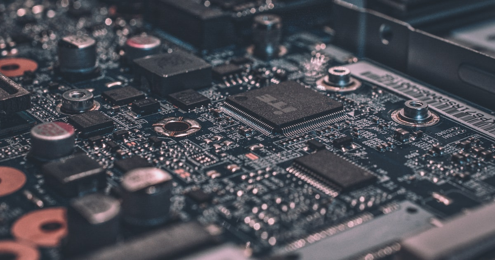
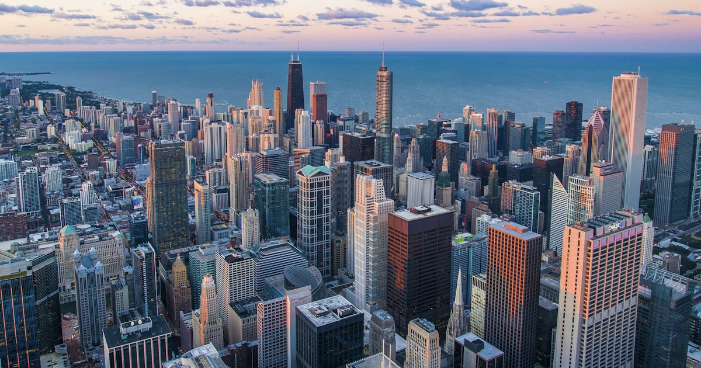
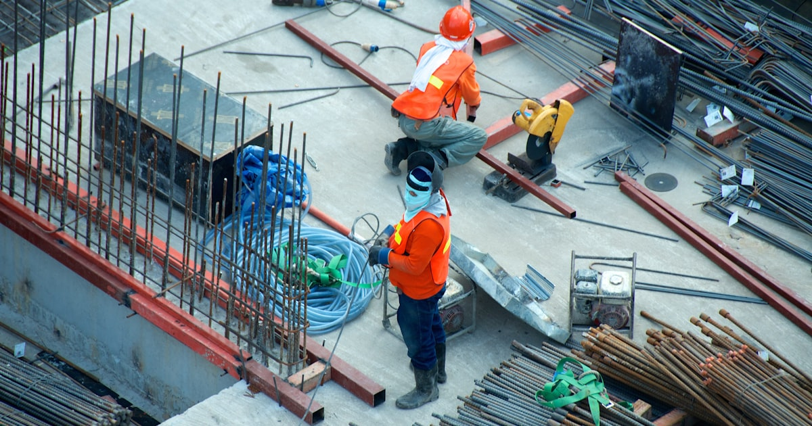
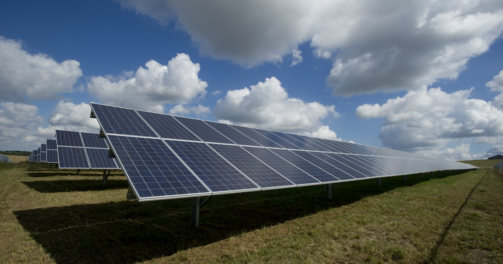
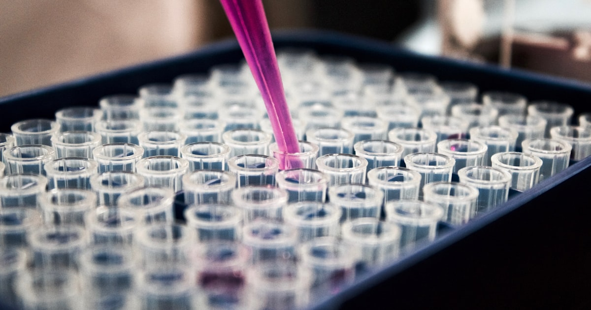

Teknik Quantum Sensing: Revolusi Diam-diam yang Mengubah Industri 2026
Quantum sensing adalah aplikasi teknologi quantum yang sudah komersial di 2026. Inilah cara kerjanya, aplikasi industri, dan dampaknya bagi Indonesia.

Quantum Computing 2026: Revolusi Teknologi yang Akan Mengubah Segalanya
IBM Condor, Google Willow, qubit vs bit. Quantum computing ancam enkripsi dunia dan bisa revolusi farmasi. Indonesia belum punya roadmap.

Krisis Energi Indonesia 2026: Ketika Perang Iran Mengguncang Pasokan Minyak Nasional
Indonesia konsumsi 1,7 juta barel/hari tapi produksi hanya 860 ribu. Perang Iran bikin avtur +72%, gas +74%. Saatnya diversifikasi energi.

Revolusi Kendaraan Listrik Indonesia 2026: Dari Wacana ke Kenyataan
Penjualan EV naik 340% dalam 2 tahun. Data lengkap adopsi kendaraan listrik, infrastruktur charging, dan keunggulan nikel Indonesia.

Perang Chip 2026: Mengapa Semikonduktor Tentukan Nasib Negara
TSMC menguasai 54% pasar chip global. Perang semikonduktor AS-China mengubah tatanan geopolitik dunia dan membuka peluang bagi Indonesia.

15 Pekerjaan yang Terancam Digantikan AI di 2026
McKinsey: 12 juta pekerjaan Indonesia berisiko terotomasi. Daftar lengkap profesi yang terancam dan skill yang harus kamu kuasai untuk bertahan.

SMR 2026: Revolusi Reaktor Nuklir Mini yang Lebih Aman & Murah
80+ desain SMR di seluruh dunia menjanjikan energi nuklir yang lebih aman, murah, dan modular. Bagaimana potensinya untuk Indonesia?

IKN Nusantara 2026: Mega Proyek Rp 466 Triliun yang Belum Selesai — Apa Kendalanya?
Progress IKN baru 42%, anggaran terserap 32.7%. Analisis kendala teknis, tantangan engineering, dan perbandingan dengan ibu kota terencana lainnya.

Chip AI: Perang Semikonduktor yang Mengubah Geopolitik
Perang chip AI global antara NVIDIA, AMD, dan TSMC mengubah lanskap geopolitik dan menentukan masa depan teknologi dunia.

Kereta Cepat Jakarta-Surabaya 2026: Lanjutan Whoosh atau Proyek Baru?
Rencana perpanjangan KCJB ke Surabaya senilai Rp 500+ triliun. Analisis rute, teknologi Shinkansen vs China CR, dan tantangan engineering.

Rekayasa Jembatan: Dari Bambu hingga Megastruktur Modern
Menelusuri evolusi teknik pembangunan jembatan dari konstruksi tradisional hingga megastruktur modern yang menghubungkan pulau.
Robotika Indonesia 2026: 6 Lompatan Mengejutkan dari Kompetisi ke Industri
Perkembangan robotika di Indonesia dari prestasi di kompetisi internasional hingga penerapan di dunia industri.

Megaproyek Indonesia: IKN, Kereta Cepat, dan Visi 2045
Indonesia sedang membangun megaproyek ambisius dari IKN hingga kereta cepat. Analisis tantangan teknis dan visi besar di baliknya.

Energi Terbarukan: Tantangan Rekayasa Masa Depan
Tantangan teknis dan rekayasa dalam mengembangkan energi terbarukan sebagai sumber energi utama Indonesia.

Bioteknologi: Rekayasa Kehidupan di Abad 21
Bioteknologi mengubah cara kita memproduksi makanan, mengobati penyakit, dan bahkan memodifikasi gen. Sejauh mana batasnya?